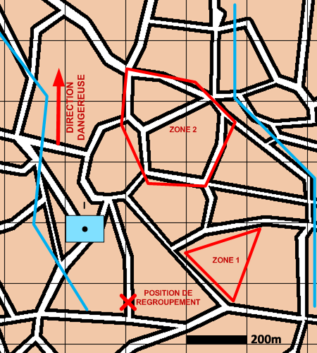

NIVEAU : Automate
ARME : ASS
MISSION : Reco Et Deploiement
NIVEAU : Automate
ARME : ASS
MISSION : Reco Et Deploiement
Schéma de modélisation |
Paramètres obligatoiresFuseauZone de responsabilité. Direction Dangereuse Orientation privilégiée des capteurs. Zone de déploiement Zone où se trouveront les sites d'implantation. Position de regroupement Position de regroupement. |
|
Paramètres optionnelsLigne de début et fin de mission [LDM/LFM] |
||
 |
Fiches missions |  |